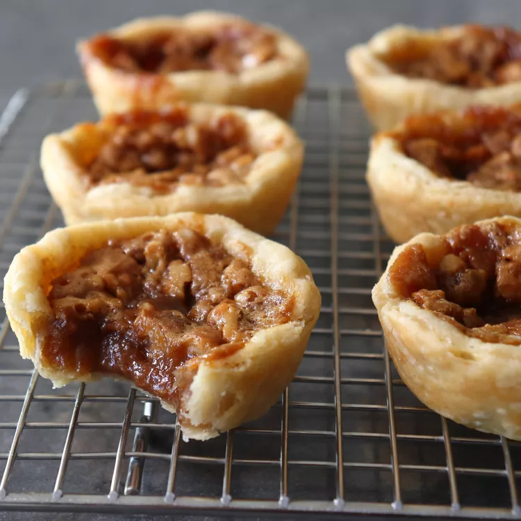

Apple Walnut Canadian Butter Tarts

Brief description:
After Poutine, Canadian butter tarts are Canada's second greatest culinary invention. This is an apple-infused twist on a traditional Canadian butter tart. These have a wonderful texture and flavor and are a perfect small dessert.
Recipe description:
The recipe couldn't be simpler. Just mix everything in a bowl, pour into the pastry, and bake until bubbling and golden brown. If you like raisins, and/or you don't want to deal with an apple reduction, you can skip that step, and just toss in a handful of dried grapes instead, but either way, I really hope you give these a try soon. Enjoy!
Ingredients
- Cooking spray
- Flour for dusting
- 1 pound prepared pie crust
- 2 cups apple juice
- 3/4 cup packed brown sugar
- 6 tablespoons unsalted butter
- 1 large egg
- 1 tablespoon whipping cream
- 1/2 teaspoon vanilla extract
- 1 pinch salt
- 1/2 cup chopped walnuts
Steps
- Preheat the oven to 375 degrees F (190 degrees C). Lightly spray a muffin tin with cooking spray.
- Dust a work surface with flour and roll out pie dough to a thickness of about 1/8 inch. Cut out 12 circles using a 4-inch round pastry cutter,
- Transfer dough into lightly sprayed muffin tin. Press the dough gently into the bottom and sides. Refrigerate while you prepare the filling.
- Add apple juice into a saucepan and simmer over medium-high heat until it has reduced to 3 or 4 tablespoons of apple syrup. Set aside.
- Place brown sugar into a bowl and pour apple syrup on top of the sugar. Add melted butter, egg, cream, vanilla, and salt. Whisk until filling is liquid and smooth.
- Pull pastry out of the fridge. Divide walnuts evenly on top of the bottom of the tart shells. Pour filling on top about 2/3 full. Tap the pan to smooth out filling.
- Bake in the preheated oven until crust is cooked through and the filling is bubbly, about 20 minutes. Let cool for about 10 minutes then remove from the muffin tins and serve at room temperature.